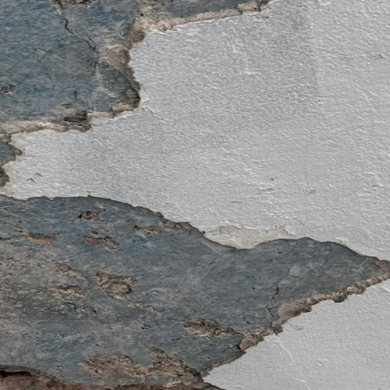

Zona este (Río Grande/Gurabo) · Puerto Rico
TU TECHO SIN EMPOZAMIENTOS, SIN FILTRACIONES
Corrección de empozamientos, reparación de grietas y sellado profesional en la zona este.
Arrastra para comparar el antes y el después


05Servicios
100%Membrana nueva
EsteZona de Puerto Rico